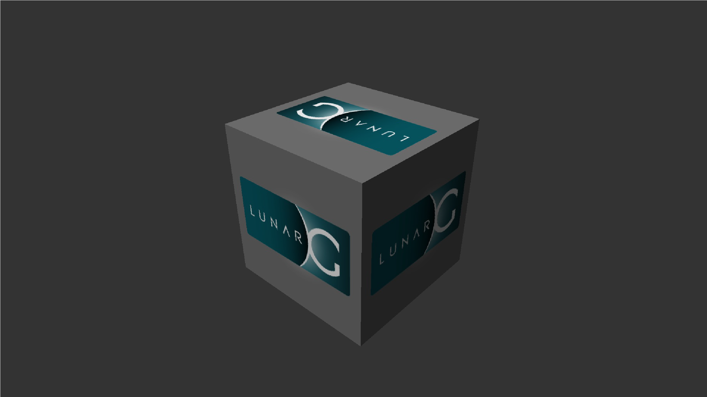

Demonstrate 3D rendering capabilities using Vulkan
vulkaninfo [options]
QNX OS
Limit the number of frames rendered to the value specified by frame_count (integer); after the frame limit is reached, vkcube exits. The default is 2147483647 for unlimited.
If you set this option and -frame-limit, the last specified option is used.
Use VK_GOOGLE_display_timing extension.
Use gpu_index to specify the GPU to use.
Set the window height in pixels.
If you set this option and -size, the last specified option is used.
Use the VK_KHR_incremental_present_enabled extension.
Set the presentation mode. Chose from the following:
If you set this option and -interval, the last specified option is used.
Use the staging buffer to copy linear texture and optimized the format.
Enable any installed validation layers.
Set the window width in pixels.
If you set this option and -size, the last specified option is used.
Set the window pixel format. Supported formats are:
If you do not set this option, Screen uses the format of the window's framebuffer. If the framebuffer's format is not supported by Vulkan, vkcube will abort.
Limit the number of frames rendered to the value specified by frame-limit (integer); after the frame limit is reached, vkcube exits. By default, this utility assumes an unlimited number of frames.
If you set this option and --c, the last specified option is used.
Set the presentation mode. Chose from the following:
If you do not set this option, Screen uses the value or default of --present_mode.
If you set this option and --present_mode, the last specified option is used.
If you use this option, Screen applies the SCREEN_USAGE_OVERLAY usage flag and uses the pipeline specified by pipeline_id.
Set the size as specified, using integer values for width and height, of the viewport in pixels. The default size is fullscreen.
If you set this option and -height, and/or --width, the last specified option is used.
The vkcube binary is a command-line tool that confirms that Vulkan is running on Screen and has all the necessary drivers. It demonstrates Vulkan's 3D rendering by displaying a rotating cube.
To control vkcube, use the following keys:
# vkcube
